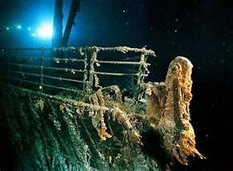

ტიტანიკის ჩაძირვა
ჩაიძირა ჩრდილო ატლანტის ოკეანეში 1912 წლის 15 აპრილს აისბერგთან შეჯახების შედეგად მისი პირველი მოგზაურობისას საუთჰემპტონიდან, ინგლისი, ნიუ-იორკში პირველმა ოფიცერმა გასცა ბრძანება, რომ საჭე მარჯვნივ მოეტრიალებინათ, რითიც, მისი აზრით, აისბერგის აცილებას შეძლებდა, ეს ასე არ მოხდა, რადგან ტიტანიკი მაქსიმალური სიჩქარით მიცურავდა. 37 წამის შემდეგ ტიტანიკი აისბერგს დაეჯახა.2224 მგზავრიდან და ეკიპაჟიდან დაახლოებით 1500 დაიღუპა, რაც ამ დრომდე ერთი გემის ყველაზე სასიკვდილო ჩაძირვა იყო.
 Click